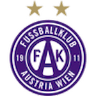
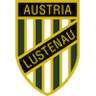
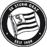
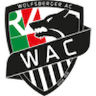
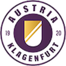
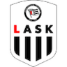

20. Runde
6 Spiele
SVR
live
1:3

FAK

ALU
live
0:2

STU
HTB
Morgen
14:30 Uhr

WAC
SV Ried
jetzt live
1:3
(1:1, 0:2)
FK Austria Wien
SC Austria Lustenau
jetzt live
0:2
(0:0, 0:2)
SK Sturm Graz
TSV Hartberg
in 21 Stunden
Samstag, 4. März
14:30 Uhr
Wolfsberger AC

SK Austria Klagenfurt
in 23 Stunden
Samstag, 4. März
17:00 Uhr
SCR Altach
WSG Tirol
vor 16 Stunden
2:3
(1:2, 1:1)
LASK
SK Rapid Wien
vor 18 Stunden
2:4
(1:1, 1:3)